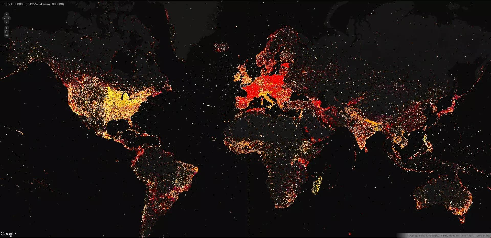

中国黑客传说：游走在黑暗中的精灵

他是我所认识的最强大的地下黑客之一，在本文中我姑且称他为 YY 。之所以是之一，是因为我还认识另外一个叫 A 的黑客，A 宣称自己成功入侵了包括 Google、Facebook、Twitter 等你几乎能叫得上名字的所有大型互联网公司。
而 YY 要低调的多。
我认为 YY 已经是地下黑客世界中的王者，虽然他从不肯告诉我他入侵的那些公司的名字，但我仍然会毫不犹豫的将他列为当今世界上最强大的黑客之一。
YY 至今仍恪守着古老的黑客守则，就如同中世纪的骑士们执着于骑士精神一般。他从不在任何公众场合谈论入侵了什么网站，入侵后也从不删除数据或是进行破坏，他也不会用入侵获得的成果来牟利。YY 只是一个人，他的身后没有任何的机构或组织，因此才更加的难能可贵。
不知道 Youth Daily 的各位读者是怎样理解“黑客”一词？简单来说，这个源自美国计算机业界的舶来名词（Hacker）是用来形容对计算机技术有着深入研究、 捍卫自由共享的网络精神、偶尔会利用技术优势做做恶作剧的电脑高手。只是猛兽易伏，人心难降，在私欲的牵引下，有些具备黑客技术的人走上了恶意破解商业软件、入侵服务器系统以谋取利益的道路，而这些人则被称为 Cracker，即“骇客”。
幽灵
“我曾经持续观察了一个女孩 3 年，3 年中一直看着她和男朋友谈情说爱。她是个美女，我只见过她两次，是朋友的朋友。最后她没有选择一直在谈情说爱的男朋友，而是和一个比她大了 8 岁的男人结婚。当她和那个比她大 8 岁的男人的结婚照出现在相册时，我彻底被现实社会给击败了。”
YY 坦诚，有时候他喜欢窥探他人的隐私。我告诉他，窥私欲是人类的天性，是所有黑客走上黑客之路的源动力。
QQ 查找好友的“可能认识的人”，把女孩推荐给了 YY （朋友的朋友）。女孩用自己的照片做了头像，所以一眼就能认出来。随后 YY 查看了女孩的个人资料，知道了女孩的邮箱地址。 YY 查出了女孩用的网易邮箱的密码（下文会解释），发现密码很有规律，是“姓名全拼+!@#”，或者“woaini+生日+姓名全拼”。
YY 进入女孩的邮箱后，发现女孩注册了 12306 用来订火车票。 YY 通过这个注册邮箱，获取了女孩在 12306 的密码。登录 12306 后， YY 得到了女孩和她家人的所有身份证信息以及出行记录。同时女孩在携程上预订的机票信息也会发送到这个邮箱。自此，女孩只要出行想去什么地方，去过哪里，全都在 YY 的掌控之中。
网易邮箱为了保护账户安全可以绑定 QQ。 YY 看到女孩的网易邮箱没有绑定QQ，就去绑定了一个自己的QQ。这样就算女孩把邮箱密码换了， YY 也能够通过绑定的QQ号强制改回来，从而实现了对女孩的终生监控。女孩至今都没发现安全认证的QQ号不是自己的。
有一次， YY 用一个QQ 的 XSS 漏洞，获得了女孩在腾讯的 Cookie，从而能够浏览她的微博私信、QQ 空间、私人相册、朋友网、QQ每天都和谁说话了，QQ 每天在哪里登陆过（如果对此技术有疑惑或者有兴趣的朋友可以查阅拙作《白帽子讲Web安全》）。 YY 就像一双隐形的眼睛，在背后默默的注视着女孩的一举一动，一颦一笑。也许 YY 比女孩最亲密的人，都更了解女孩的一切。
这里没有什么狗血的爱情故事， YY 只是默默的观察着，而从未惊动过女孩。
YY 还控制了很多大型商场、写字楼的内网。有一段时间，他曾经研究过保安的行为。
“公司给保安们安排的监控电脑，是无法上网消遣的。我看到有几个技术型保安，买了一个叫如意天线的东西，专门破解附近无线密码的玩意，还带无线网卡功能。
他们把用来监控的电脑装上了这个如意天线网卡，破解了写字楼很多楼层的密码，记录在一个文档里面。比如：WIFI 名，密码是多少的一个文档，大约有几十个。
保安对于整个商场的网络安全来说，是个很大的隐患。我还特意登录了他们用的客户端，看他们平时都做些什么，研究他们。保安们每天用电脑的需求就是聊 QQ，上网看电影。”
我想监守自盗，不过如此吧。
控制了商场的内部系统就能修改充值卡、积分卡的数据，从而免费购物， YY 也验证过这一点。
翻手为云
不过观察女孩、研究保安、控制商场和写字楼都只是 YY 强大能力的冰山一角。YY 通过控制公共服务设施，具备了很多只在电影中出现的很科幻的能力。
YY 都不太好意思提像“伪造任意手机号码发送短信”等半公开的技术。 YY 能够做到查询指定手机的短信内容、通讯记录。还能查到指定手机号当前所在基站的编号，然后找到对应编号基站的物理地址，这意味着他能快速定位到任何一个人的真实地理位置所在。这一切都基于 YY 对运营商内部系统权限的控制。也许你已经意识到了，控制了运营商的内部系统，就可以针对每个省的手机用户实现定向推送短信。
YY 已经拥有了强大的舆论控制能力。借助社交网络和新闻资讯网站，以及运营商级别的手机广播， YY 可以让自己的思想在10分钟内传遍整个互联网。但 YY 从未滥用过他的能力。
YY 控制了大部分粉丝数量在百万和千万级的微博大号，他给我展示的战果里不乏像苍井空、欧弟这样的人民艺术家。他告诉我，大部分微博大号都是经纪人在打理，而非本人，真不知道粉丝们每天瞎起个什么劲。所以“何润东”同学的“大概8点20分发”可能也是这样闹出来的乌龙。 YY 在一些影响力巨大的微博大号后台里仔细研究过他们的行为，有些大号也是本人在操作，比如李开复、keso等意见领袖。
“咳咳，那个谁，keso同学，你的密码是7位的数字，赶紧找个时间改改吧！”
如同往常一样， YY 并未惊动这些大号们，只是在背后默默的观察着他们的一言一行。
“观察女孩子是猥琐的事情，我还希望能够做些正义的事情。”， YY 说。
“你有没有想过未来像维基解密的创始人阿桑奇一样，揭露一些真相？”，我问。
“也许吧，我希望让更多‘需要靠奥特曼打小怪兽培养正义感’的年轻人们，能够有机会倾听到社会真正的声音。” YY 如是说。
无独有偶，阿桑奇在接受 TED 采访时，也谈到“纳税人有权知道他们缴税来支撑的这些事情的真相。”
自古侠以武犯禁，人在做，天在看。多行不义者，小心会被 YY 盯上后“研究一段时间”。
YY 告诉我，他控制过很多电力、自来水、煤气等基础设施服务公司。以电力公司为例，一个小区在开发商开发好后，随着房子卖出，物业公司会联系电力公司为每家每户布线装表。此时，业主的联系信息（和房产证的信息基本一致）将被写入电网的相关系统，只要在电网、自来水公司、煤气公司的数据库里查询一下记录，就能查出很多“房叔”、“房姐”之类的人。
地下世界的王者
对于真正强大的黑客来说，已经勿须再关注是否能控制个别网站的权限， YY 所控制的权限都是以“行业”为单位来划分的。
“网页游戏行业90%的公司，一些大型电商、大型论坛，80%的连锁酒店行业，80%以上的在线预订行业，手机App排行比较高的公司，几家最大的航空公司……”， YY 拉出了长长的一串名单。
我问 YY ，“还有什么网站是你黑不掉的吗？”
YY 答道：“目前成功率是100%，只要有耐心，还没有黑不掉的。有几个站，我已经持续盯了 6 年了，我的感觉是快要拿下了……黑站黑多了，你就会有这样的直觉。”
我想任何网站一旦知道有一个像 YY 这样的人在长期惦记着，都会感到毛骨悚然吧。这种长期的、持续的攻击方式，在安全行业里有一个专业术语，叫 APT（Advanced Persistent Threat）。但 YY 对此不屑一顾，他不知道为什么这么好玩的事情一定要加上一个专业名词。
“以前我会自己去找一些 WEB 程序的0day，现在基本上不需要了。现在靠的是对目标的了解，把目标分解后，不一定非得在WEB系统上耗时间。和目标相关的所有人，或者同一交换机，同一骨干路由下的服务器也会成为我的攻击目标。
每一次攻击行为都做到极致，对手其实是自己，而不是任何其他系统或人。重要的是整个攻击过程开心就好。还有一种感觉我说不出来。每一次证实自己的想法，做到极限的时候，都会伴随着快感。”
YY 发现了很多独特的，有创意的攻击手法，他也乐在其中。“Hacking For Fun”在他的身上体现的淋漓尽致。
领先一个时代的攻击技术
YY 对国内的公司兴趣已经不大了，因为没什么挑战。目前 YY 走上了国际化的道路。
他最大的成就，是积累了一个去重后有 13 亿条数据的数据库。每条记录，都包含了用户名、密码、身份证号（社保ID）、手机号、邮箱、登录 IP 等信息。
对于 YY 来说，想知道谁的密码，只需要在库中简单的查询一下，马上就得到了。有时候密码经过了哈希算法的处理，需要经过彩虹表的反查，或者 YY 会拿到一个云计算中心去用分布式计算框架破解（对技术有疑惑或者有兴趣的读者可以参阅拙作《白帽子讲Web安全》）。所以 YY 能够直接查到女孩的邮箱密码。
“道哥，你的 Facebook 账号和 Twitter 账号都是同一个弱口令，好多年了，改改吧。”， YY 一脸坏笑的对我说。
YY 在入侵的过程中，遇到任何需要破解的账户，大部分都可以直接查询出密码，无往而不利。这个数据库，像滚雪球一样越滚越大，最终量变形成了质变。
在前几天，Youtube刚刚宣布他们的月度活跃用户数达到了10亿，这意味着互联网上每两个网民中就有一个是Youtube的活跃用户。 YY 可能会在背后暗自偷笑吧，他的13亿去重后的用户数据，也覆盖了半个互联网。每两个人中，就有一个人的密码在 YY 的掌控，你会不会是那一个人呢？
当其他的小黑客们还在摆弄着各种扫描器和 0day 的时候， YY 已经用领先了整整一个时代的技术 —- 大数据的方式 —- 来黑网站了。
在真正强大的黑客面前，互联网公司的任何防御措施都像是一张纸，显得如此的薄弱，一捅就破。黑客们只能靠道德来约束自己的行为，能力越强，责任越大。

上图，YY 从他的 13 亿条记录中轻巧的抽取出了 80 万登录IP，绘制了这张铺满全世界的地图。
从空旷的格陵兰岛，到炽热的撒哈拉大沙漠；从寒冷的西伯利亚，到充满野性的亚马逊丛林；从北极冰原，到太平洋、大西洋上星罗密布的岛屿；YY ，在这个星球上，还有什么地方是你不曾征服的吗？你点亮了全世界！
正如你们所想， YY 只是一个符号，同时也不仅仅只是一个符号。
本文转载自：道哥的黑板报